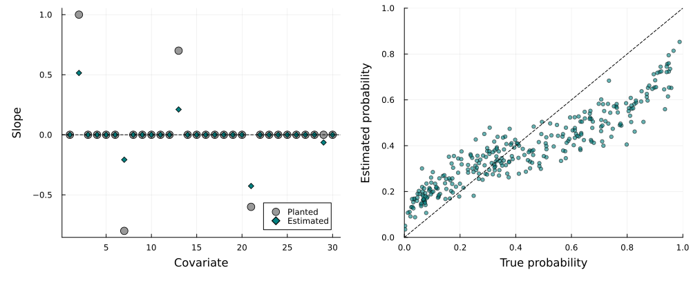

Sparse logistic regression
Logistic regression models the probability of a binary outcome from a linear predictor. With many candidate covariates, an ℓ₁ penalty on the slopes can give a minimizer in which some slopes are exactly zero, while the intercept stays unpenalized; at a larger level the ℓ₁ norm of the slopes at the minimizer is no larger, although an individual slope need not shrink. This page fits such a model with ProximalGradientDescent and checks the fit with quantities computed directly from the data.

The penalized likelihood
For responses $y_i\in\{0,1\}$ and covariates $z_i\in\mathbb{R}^p$, put a column of ones in front of the covariates, $\tilde X=[\mathbf{1}\;Z]$, with coefficients $b=(b_0,b_1,\dots,b_p)$ and linear predictor $\eta=\tilde Xb$. The model says $P(y_i=1)=\sigma(\eta_i)$ with $\sigma(t)=1/(1+e^{-t})$. The solver minimizes
\[F(b)=\sum_{i=1}^n \{\log(1+e^{\eta_i})-y_i\eta_i\}+n\lambda\sum_{j=1}^{p}|b_j|.\]
LogisticLoss(y, X̃) from ProximalBase is the first sum: the negative log likelihood summed over the observations, not averaged. Divided by $n$, $F/n$ is the mean negative log likelihood plus $\lambda\|b_{1:p}\|_1$, the usual normalization, so the penalty level passed to the solver is $n\lambda$. In NormL1(n * lambda, w) with w = [0.0; ones(p)], the weights are penalty weights: the first is zero, so the intercept $b_0$ is not penalized. They are not observation weights, which this solver does not support. The solver also refuses the scaled loss (1/n) * LogisticLoss(y, X̃); in exact arithmetic the raw loss with the level $n\lambda$ has the same minimizers, provided the penalty with that level passes the solver's level and weight rules. See the input contract for the supported data and the refusals.
using LinearAlgebra, Printf, Random, ProximalBase, ProximalSolversStable forms of the sigmoid and of $\log(1+e^t)$: neither evaluates $e^t$ for a large positive $t$. With $s_i=1-2y_i$, the loss term of observation $i$ is $\log(1+e^{s_i\eta_i})$ and the derivative $\sigma(\eta_i)-y_i$ is $s_i\sigma(s_i\eta_i)$; these label-wise forms avoid cancellation when $|\eta_i|$ is large.
sigmoid(t) = t >= 0 ? inv(1 + exp(-t)) : exp(t) / (1 + exp(t))
softplus(t) = t > 0 ? t + log1p(exp(-t)) : log1p(exp(t))softplus (generic function with 1 method)Simulated data
There are 300 observations and 30 covariates; neighbouring covariates have population correlation 0.5. Four covariates carry signal, and the true intercept is $-0.5$. The responses are drawn from the model. Its probabilities lie strictly between 0 and 1, so the two classes can overlap, but a finite sample can still be separable by chance; the next section checks this sample.
rng = Xoshiro(438)
n, p = 300, 30
Z = randn(rng, n, p)
for j in 2:p
Z[:, j] .= 0.5 .* Z[:, j - 1] .+ sqrt(1 - 0.5^2) .* Z[:, j]
end
beta_true = zeros(p)
beta_true[[2, 7, 13, 21]] = [1.0, -0.8, 0.7, -0.6]
intercept_true = -0.5
prob_true = sigmoid.(intercept_true .+ Z * beta_true)
y = Float64.(rand(rng, n) .< prob_true)
@assert 0 < sum(y) < n # both classes are present
X = [ones(n) Z]300×31 Matrix{Float64}:
1.0 -0.0131495 -0.728731 … 0.959306 0.370574 0.588022
1.0 0.00802487 -0.392844 1.03259 0.48774 1.40241
1.0 0.524938 2.44181 -0.973107 -2.18709 -2.20977
1.0 0.616487 0.0737385 0.274878 0.242229 -0.908215
1.0 -1.168 0.424369 0.532453 0.120799 -0.147341
1.0 0.753913 0.389036 … 0.338689 0.655141 0.304108
1.0 0.522348 1.26558 -0.232431 -0.348383 -1.09069
1.0 -0.555418 0.516148 -2.95615 -1.33097 -0.140612
1.0 0.396656 -0.381732 0.709549 1.09656 1.9888
1.0 -0.169785 -0.730541 0.0579629 -0.372763 -2.32198
⋮ ⋱ ⋮
1.0 0.110222 0.322601 0.344408 1.32999 -0.458423
1.0 0.0623849 -0.527749 -2.07911 -0.35447 1.3659
1.0 -1.87827 -1.06746 0.111889 0.826587 -0.356274
1.0 -0.0125227 -1.58432 -1.34453 0.0918586 -1.04854
1.0 -0.483469 -0.425173 … 0.482646 -0.621429 -0.191801
1.0 -1.31377 -1.77211 0.520113 2.06465 1.36043
1.0 1.87462 1.39703 -0.55841 -0.540628 0.173521
1.0 -0.183266 -0.257372 -0.867629 -0.659786 -0.33993
1.0 0.450425 0.226244 -0.00651862 0.506844 -0.255649Checking that this sample is not separable
With $r_i=2y_i-1$, the data are separable, at least weakly, when some $d\neq0$ has $r_i\tilde x_i^\top d\ge0$ for every $i$; for a design of full column rank the unpenalized loss then decreases strictly along $d$ and has no minimizer. In exact arithmetic, positive weights $u_i$ with $\sum_i u_ir_i\tilde x_i=0$ rule this out: for such a $d$, $0=\sum_i u_ir_i\tilde x_i^\top d$ would force $\tilde Xd=0$. We take $u_i=|y_i-\sigma(\eta_i)|$ at an approximate unpenalized fit from 25 Newton steps, subtract the least-squares correction $c$ that makes $\sum_i(u_i-c_i)r_i\tilde x_i$ zero in exact arithmetic, and check numerically that $u-c$ stays positive, with the correction below $10^{-6}$ times the smallest weight, and that $\tilde X$ has full numerical rank. This is a numerical check of the argument for this sample. For $\lambda>0$ the penalized fit below has a finite minimizer when both classes are present, separable or not: the penalty bounds the slopes, and then the two classes bound the intercept.
b_newton = zeros(p + 1)
for _ in 1:25
mu = sigmoid.(X * b_newton)
b_newton .-= (X' * (X .* (mu .* (1 .- mu)))) \ (X' * (mu .- y))
end
r = 2 .* y .- 1
A = r .* X
u = sigmoid.(-r .* (X * b_newton)) # |y_i - σ(η_i)|, without cancellation
c = A * ((A' * A) \ (A' * u))
@assert rank(X) == p + 1
@assert minimum(u - c) > 0 && maximum(abs, c) < 1e-6 * minimum(u)The level at which all slopes vanish
With the slopes at zero, the best intercept is $b_0=\operatorname{logit}(\bar y)$, where $\bar y$ is the fraction of ones; there $\sigma(b_0)=\bar y$, so the gradient of the summed loss in the slopes is $Z^\top(\bar y-y)$. The zero slopes then satisfy the optimality conditions exactly when $|[Z^\top(\bar y-y)]_j|\le n\lambda$ for every $j$, that is, for $\lambda\ge\lambda_{\max}=\|Z^\top(\bar y-y)\|_\infty/n$. We use $\lambda=0.3\,\lambda_{\max}$, an illustrative choice, not one tuned for prediction.
ybar = sum(y) / n
lambda_max = norm(Z' * (ybar .- y), Inf) / n
lambda = 0.3 * lambda_max0.05299837832567335Fitting with proximal gradient descent
The coefficients are a dense Vector{Float64} and the design a dense Matrix{Float64}. The options ask for a computed stationarity residual far below the scale of the problem. With allow_f_increases = true, an iteration that increases the objective does not end the run; near the minimizer rounding can cause such increases.
f = LogisticLoss(y, X)
w = [0.0; ones(p)]
g = NormL1(n * lambda, w)
b = zeros(p + 1)
options = ProximalOptions(maxiter = 20_000, ftol = 1e-15, xtol = 1e-12, gradtol = 1e-10,
allow_f_increases = true)
result = solve!(b, f, g, ProximalGradientDescent(), options)
@assert result.minimizer === bChecking the fit from the data
result.converged reports the solver's own stopping test. It is not, by itself, proof that the returned point solves the problem accurately, and still less that the model is statistically right. We therefore recompute the objective and the optimality conditions from X, y and b. With $g=\tilde X^\top(\sigma(\eta)-y)$, the gradient of the summed loss, the stationarity score of coefficient $j$ is
- $|g_0|$ for the intercept, which is unpenalized;
- $\max(|g_j|-n\lambda,0)$ for a slope that is exactly zero;
- $|g_j+n\lambda\,\mathrm{sign}(b_j)|$ for a nonzero slope.
The largest score is zero exactly at a minimizer. The solver reports converged = true only when its own residual is below $10^{-10}S$, with the scale $S=\max(n\lambda,\|\tilde X^\top(\tfrac12-y)\|_\infty)$ printed below. The tolerance $10^{-8}n$ on the independent residual is our choice; the script checks that it is at least ten times the solver's threshold $10^{-10}S$ here.
eta = X * b
s = 1 .- 2 .* y
grad = X' * (s .* sigmoid.(s .* eta))
S = max(n * lambda, norm(X' * (0.5 .- y), Inf))
@assert 1e-10 * S <= 1e-9 * n # the tolerance is at least ten times the solver's threshold
scores = [j == 1 ? abs(grad[1]) :
iszero(b[j]) ? max(abs(grad[j]) - n * lambda, 0.0) :
abs(grad[j] + n * lambda * sign(b[j])) for j in eachindex(b)]
kkt = maximum(scores)
objective = sum(softplus.(s .* eta)) + n * lambda * sum(abs, b[2:end])
@assert isapprox(result.minimum, objective; rtol = 1e-12)
@assert kkt <= 1e-8 * n
nonzero = count(!iszero, b[2:end])
@assert 0 < nonzero < p # a sparse fit with some, but not all, slopes
@printf("converged = %s after %d iterations; objective F = %.10g; KKT residual / n = %.2e\n",
result.converged, result.iterations, objective, kkt / n)
@printf("stopping scale S = %.4g, so 1e-10 S = %.2e and 1e-8 n = %.2e\n", S, 1e-10 * S, 1e-8 * n)
@printf("lambda_max = %.4f, lambda = %.4f; %d of %d slopes are nonzero\n", lambda_max, lambda, nonzero, p)converged = true after 22 iterations; objective F = 182.2215781; KKT residual / n = 1.32e-11
stopping scale S = 50.01, so 1e-10 S = 5.00e-09 and 1e-8 n = 3.00e-06
lambda_max = 0.1767, lambda = 0.0530; 5 of 30 slopes are nonzeroThe planted and the estimated coefficients, for the slopes that are nonzero in either. At a larger level the ℓ₁ norm of the slopes at the minimizer is no larger; in a correlated design an individual estimate need not shrink, and a correlated neighbour of a planted covariate can be selected in its place. The page asserts no particular support.
@printf("%-10s %9s %9s\n", "", "planted", "estimate")
@printf("%-10s %9.3f %9.3f\n", "intercept", intercept_true, b[1])
for j in 1:p
(beta_true[j] != 0 || b[j + 1] != 0) && @printf("%-10s %9.3f %9.3f\n", "slope $j", beta_true[j], b[j + 1])
end planted estimate
intercept -0.500 -0.599
slope 2 1.000 0.514
slope 7 -0.800 -0.208
slope 13 0.700 0.211
slope 21 -0.600 -0.426
slope 29 0.000 -0.064Fitted probabilities and the intercept-only model
The fitted probabilities are $\sigma(\eta_i)$. The mean log-loss is $F/n$ without the penalty, the mean negative log likelihood; the Brier score is the mean squared difference between probability and outcome. The intercept-only model predicts $\bar y$ for every observation; its mean log-loss is $-\bar y\log\bar y-(1-\bar y)\log(1-\bar y)$ and its Brier score $\bar y(1-\bar y)$. The minimum of $F$ is at most $F$ at the intercept-only point, so for $\lambda>0$ a minimizer has a smaller mean log-loss on these data when one of its slopes is nonzero. Both scores are computed on the training data, so they measure fit, not prediction on new data. With $n=300$ the median is the mean of the two middle probabilities.
prob = sigmoid.(eta)
sorted_prob = sort(prob)
median_prob = isodd(n) ? sorted_prob[(n + 1) ÷ 2] : (sorted_prob[n ÷ 2] + sorted_prob[n ÷ 2 + 1]) / 2
mean_log_loss = sum(softplus.(s .* eta)) / n
brier = sum(abs2, prob .- y) / n
null_log_loss = -(ybar * log(ybar) + (1 - ybar) * log(1 - ybar))
null_brier = ybar * (1 - ybar)
@assert mean_log_loss < null_log_loss
@printf("fitted probabilities: min %.3f, median %.3f, max %.3f, mean %.3f (fraction of ones %.3f)\n",
minimum(prob), median_prob, maximum(prob), sum(prob) / n, ybar)
@printf("%-16s %14s %12s\n", "", "mean log-loss", "Brier score")
@printf("%-16s %14.4f %12.4f\n", "sparse fit", mean_log_loss, brier)
@printf("%-16s %14.4f %12.4f\n", "intercept only", null_log_loss, null_brier)fitted probabilities: min 0.035, median 0.373, max 0.853, mean 0.383 (fraction of ones 0.383)
mean log-loss Brier score
sparse fit 0.5320 0.1770
intercept only 0.6657 0.2364At a level above $\lambda_{\max}$ the minimizer, in exact arithmetic, is the intercept-only model: zero slopes and $b_0=\operatorname{logit}(\bar y)$. The script checks that the solver returns exact zeros for the slopes and an intercept within $10^{-8}$ of $\operatorname{logit}(\bar y)$.
b_null = zeros(p + 1)
solve!(b_null, f, NormL1(1.01 * n * lambda_max, w), ProximalGradientDescent(), options)
@assert all(iszero, b_null[2:end])
@assert abs(b_null[1] - log(ybar / (1 - ybar))) <= 1e-8The figure
The left panel shows the planted and the estimated slopes, the right panel the estimated against the true probabilities, with the diagonal for reference.
using Plots
left = scatter(1:p, beta_true; label = "Planted", color = :gray60, markersize = 6,
xlabel = "Covariate", ylabel = "Slope", legend = :bottomright)
scatter!(left, 1:p, b[2:end]; label = "Estimated", color = :teal, marker = :diamond)
hline!(left, [0.0]; color = :black, linestyle = :dash, label = "")
right = scatter(prob_true, prob; label = "", color = :teal, markersize = 3, alpha = 0.6,
xlabel = "True probability", ylabel = "Estimated probability", xlims = (0, 1), ylims = (0, 1))
plot!(right, [0, 1], [0, 1]; color = :black, linestyle = :dash, label = "")
figure = plot(left, right; layout = (1, 2), size = (1000, 420), left_margin = 5Plots.mm, bottom_margin = 5Plots.mm)
savefig(figure, "logistic_regression.svg")
nothingLimitations
The solver supports this model only with a dense Float64 design, a binary response and ProximalGradientDescent; observation weights, offsets, a scaled loss, AccProxGradDescent and CDSolver are refused. The level $\lambda$ here is fixed for illustration. To choose it for prediction, one option is to compare levels on data not used for the fit; the selected covariates also depend on the correlation between them.
What we learned
LogisticLoss sums over the observations, so a mean-scale level $\lambda$ enters as $n\lambda$, and a zero penalty weight leaves the intercept unpenalized. $\lambda_{\max}$ follows from the gradient at the intercept-only fit. The objective and the stationarity scores computed from the data agree with the reported objective and meet the tolerance chosen here.